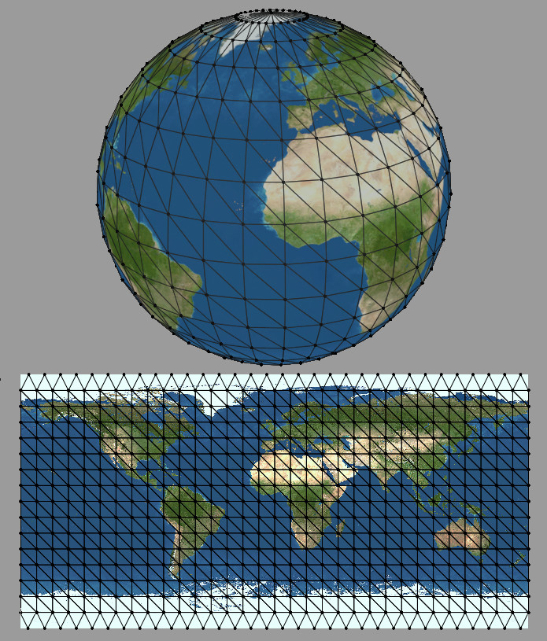

Les matériaux¶
Nous avons vu au chapitre précédent qu’un Mesh est un objet 3D correspondant à l’association d’une géométrie et d’un matériau.
Un matériau définit la façon dont la géométrie doit être rendue dans l’image. Un matériau fournit les informations nécessaires à un shader, c’est-à-dire à un programme exécuté par la carte graphique pour créer le rendu.
Le MeshBasicMaterial¶
Si vous ne précisez aucun matériau lors de la création d’une instance de Mesh, alors three.js utilise par défaut un nouveau MeshBasicMaterial en utilisant une couleur au hasard.
Le MeshBasicMaterial, comme son nom l’indique, est très simple. Il remplit la géométrie à partir d’une couleur ou d’une texture sans tenir compte de l’ombrage (shading). Ce matériau fonctionne donc sans avoir besoin d’ajouter des lumières dans la scène.
1 2 3 4 5 6 7 8 9 10 11 12 13 14 15 16 17 18 19 20 21 22 23 24 25 26 27 28 29 30 31 32 33 34 35 36 37 38 39 40 41 42 43 44 45 46 47 48 49 50 | <!DOCTYPE html>
<html>
<head>
<meta charset=utf-8>
<title>three.js app</title>
<style>
body {
margin: 0;
overflow: hidden;
}
</style>
</head>
<body>
<script src="https://threejs.org/build/three.min.js"></script>
<script>
// création du renderer
var renderer = new THREE.WebGLRenderer();
document.body.appendChild(renderer.domElement);
renderer.setSize(window.innerWidth, window.innerHeight);
// création de la caméra
var camera = new THREE.PerspectiveCamera(45, window.innerWidth / window.innerHeight, 0.5, 1000);
// création de la scène
var scene = new THREE.Scene();
// couleur de fond noire
scene.background = new THREE.Color(0, 0, 0);
// création d'un objet à partir d'une géométrie
// et d'un matériau de couleur rouge
var object = new THREE.Mesh(
new THREE.TorusKnotGeometry(),
new THREE.MeshBasicMaterial({color: 0xFF0000})
);
scene.add(object);
// positionnement de la caméra
camera.position.z = 10;
function animate() {
object.rotateY(.05);
requestAnimationFrame(animate);
renderer.render(scene, camera);
}
animate();
</script>
</body>
</html>
|
Vous pouvez télécharger ce fichier directement.
À la ligne 34, on passe en paramètre de la construction du Mesh un nouveau
MeshBasicMaterial pour lequel on précise une couleur rouge 0xFF0000.
Note
Notez qu’un matériau possède des propriétés qui peuvent être changées pour modifier dynamiquement le rendu d’un objet. Ainsi, MeshBasicMaterial possède la propriété wireframe qui indique si l’objet doit être rendu en fil de fer. Il est très facile de créer un rendu qui peut être contrôlé au moyen du clavier :
1 2 3 4 5 6 7 8 9 10 11 12 13 14 15 16 17 18 19 20 21 22 23 24 25 26 27 28 29 30 31 32 33 34 35 36 37 38 39 40 41 42 43 44 45 46 47 48 49 50 51 52 53 54 55 56 57 58 59 60 61 62 63 64 65 | <!DOCTYPE html>
<html>
<head>
<meta charset=utf-8>
<title>three.js app</title>
<style>
body {
margin: 0;
overflow: hidden;
}
.instruction {
color: white;
position: fixed;
top: 0;
z-index: 1000;
}
</style>
</head>
<body>
<div class="instruction">Appuyer sur une touche pour passer de la vue fil de fer (wireframe) à la vue solide.</div>
<script src="https://threejs.org/build/three.min.js"></script>
<script>
// création du renderer
var renderer = new THREE.WebGLRenderer();
document.body.appendChild(renderer.domElement);
renderer.setSize(window.innerWidth, window.innerHeight);
// création de la caméra
var camera = new THREE.PerspectiveCamera(45, window.innerWidth / window.innerHeight, 0.5, 1000);
// création de la scène
var scene = new THREE.Scene();
// couleur de fond noire
scene.background = new THREE.Color(0, 0, 0);
// création d'un objet à partir d'une géométrie
// et d'un matériau de couleur rouge
material = new THREE.MeshBasicMaterial({color: 0xf7e951})
material.wireframe = true;
var object = new THREE.Mesh(
new THREE.TorusKnotGeometry(),
material
);
scene.add(object);
// positionnement de la caméra
camera.position.z = 10;
function animate() {
object.rotateY(.05);
requestAnimationFrame(animate);
renderer.render(scene, camera);
}
// on enregistre un listener pour changer le mode
document.body.addEventListener("keydown", function() {
material.wireframe = ! material.wireframe;
});
animate();
</script>
</body>
</html>
|
Vous pouvez télécharger ce fichier directement.
À la ligne 40, on position la valeur de la propriété wireframe à true.
Des lignes 58 à 60, on enregistre un listener pour inverser l’état de cette
propriété lorsqu’on presse un touche du clavier.
Les lumières¶
Exception faite du MeshBasicMaterial, la plupart des matériaux utilisés pour le rendu réalise un ombrage sur le modèle pour donner un effet plus ou moins réaliste d’éclairage.
Ainsi ces matériaux interagissent avec les lumières présentes dans la scène. Pour insérer des lumières dans la scène, three.js offre plusieurs types différents :
- AmbientLight
- Une lumière ambiante sert à fournir une illumination globale à la scène. Cette source lumineuse n’a pas de position, elle contribue à l’illumination de la scène en tout point. Elle sert à simuler la présence des lumières indirectes et on l’utilise généralement à une faible intensité pour donner une ambiance générale.
- DirectionalLight
La lumière directionnelle représente une lumière dont tous les rayons sont parallèles. Ainsi la position de la lumière dans la scène ne sert qu’à déterminer le vecteur directeur des rayons lumineux.
Ce type de lumière représente des lumières très distantes (à la limite de l’infini) et très puissante. Elle est généralement utilisée pour simuler un éclairage par le soleil.
- HemisphereLight
- La lumière hémisphérique simule un dôme qui émet de la lumière au dessus et en dessous de la scène. Ce type d’éclairage permet de simuler un éclairage du ciel en extérieur en prenant en compte l’éclairage indirect du sol.
- PointLight
- Ce type de lumière est émise depuis un point (la position de la lumière dans la scène à donc beaucoup d’importance) dans toutes les directions. De plus, l’intensité de la lumière décroît à mesure qu’on s’éloigne de la source. Ce type de lumière permet de simuler un éclairage par une ampoule.
- RectAreaLight
- Ce type de lumière est émise de manière uniforme depuis un plan. Ce type de lumière permet de simuler un éclairage par une fenêtre par exemple. Comme pour la précédente, l’intensité lumineuse décroît à mesure qu’on s’éloigne de la source. Cette source de lumière ne fonctionne que pour les matériaux PBR : MeshStandardMaterial et MeshPhysicalMaterial (Cf. ci-dessous).
- Spotlight
- Ce type de lumière est émise depuis un point et dans une direction. Le spot simule un cône de lumière. L’intensité lumineuse décroît à mesure que l’on s’éloigne de la direction du spot.
Une lumière n’a pas de représentation dans la scène, elle est simplement exploitée comme source pour le rendu des matériaux qui nécessitent un éclairage.
Note
Pour du débogage, si vous voulez faire apparaître la position des lumières dans la scène, vous pouvez utiliser les objets correspondants : DirectionalLightHelper, HemisphereLightHelper, PointLightHelper, RectAreaLightHelper, RectAreaLightHelper, SpotLightHelper.
Les matériaux réagissant à la lumière¶
Il existe cinq matériaux réagissant à la lumière pour un rendu plus ou moins réaliste :
- MeshLambertMaterial
- Ce matériau est basé sur le modèle mathématique de Gouraud pour calculer les ombrages. C’est le modèle le plus ancien, le plus performant mais également le moins réaliste. Il se base principalement sur la couleur de l’objet et les lumières de la scène.
- MeshPhongMaterial
- Ce matériau est basé sur le modèle mathématique de Blinn-Phong qui est une amélioration du modèle de Gouraud. En plus de la couleur et de la lumière, ce matériau tient compte de la spécularité, c’est-à-dire de l’incidence des rayons lumineux par rapport à l’observateur pour faire ressortir des effets de réflexion des sources lumineuses. Ce matériau reste peu réaliste mais à l’avantage d’être relativement peu consommateur en de temps de calcul.
- MeshToonMaterial
- Ce matériau est basé sur le MeshPhongMaterial pour réaliser du toon shading. Ce type de rendu ne se veut pas réaliste et permet de créer des dégradés d’ombrage par bande type dessins-animées.
- MeshStandardMaterial
- Ce matériau est basé sur le principe de rendu PBR (Physically Based Rendering). Ce type de matériau permet des rendus beaucoup plus réalistes en prenant notamment en compte les principes optiques de réflexion des surfaces, de l’effet de Fresnel et du principe de conservation de l’énergie. Ce matériau est cependant plus complexe à manipuler.
- MeshPhysicalMaterial
- Ce matériau est basé sur le MeshStandardMaterial en ajoutant le principe du clear coat afin de simuler une pellicule brillante qui recouvre certains matériaux comme la peinture de voiture par exemple.
L’exemple ci-dessous crée un objet avec un matériau de type MeshPhongMaterial ainsi que trois lumières.
1 2 3 4 5 6 7 8 9 10 11 12 13 14 15 16 17 18 19 20 21 22 23 24 25 26 27 28 29 30 31 32 33 34 35 36 37 38 39 40 41 42 43 44 45 46 47 48 49 50 51 52 53 54 55 56 57 58 59 60 61 62 63 | <!DOCTYPE html>
<html>
<head>
<meta charset=utf-8>
<title>three.js app</title>
<style>
body {
margin: 0;
overflow: hidden;
}
</style>
</head>
<body>
<script src="https://threejs.org/build/three.min.js"></script>
<script>
// création du renderer
var renderer = new THREE.WebGLRenderer();
document.body.appendChild(renderer.domElement);
renderer.setSize(window.innerWidth, window.innerHeight);
// création de la caméra
var camera = new THREE.PerspectiveCamera(45, window.innerWidth / window.innerHeight, 0.5, 1000);
// création de la scène
var scene = new THREE.Scene();
// couleur de fond noire
scene.background = new THREE.Color(0, 0, 0);
// création d'un objet
var object = new THREE.Mesh(
new THREE.TorusKnotGeometry(1, .4, 128, 16),
new THREE.MeshPhongMaterial({color: 0xf7e951})
);
scene.add(object);
// Ambient light
var ambientLight = new THREE.AmbientLight(0xffffff, .1);
scene.add(ambientLight);
// Directional light
var directionalLight = new THREE.DirectionalLight(0xffdddd, .8);
directionalLight.position.set(1,1,1);
scene.add(directionalLight);
// Point light
var pointLight = new THREE.DirectionalLight(0xaaaaff, .3);
pointLight.position.set(-2,1,1);
scene.add(pointLight);
// positionnement de la caméra
camera.position.z = 10;
function animate() {
object.rotateY(.05);
requestAnimationFrame(animate);
renderer.render(scene, camera);
}
animate();
</script>
</body>
</html>
|
Vous pouvez télécharger ce fichier directement.
Note
Vous trouverez à cette adresse une scène pour tester les matériaux et les lumières.
Excercice¶
Le système planétaire (suite)
Ajoutez des matériaux pour la Terre et la Lune. Pour l’instant utilisez du bleu pour la Terre et du gris pour la Lune.
Ajoutez des lumières pour la scène :
- Une lumière ambiante très faible pour simuler l’éclairage du cosmos
- Une lumière directionnelle pour le Soleil.
Textures et Maps¶
Une texture est un fichier image qui est utilisé pour fournir des informations supplémentaires au matériau lors du rendu. L’exemple le plus évident consiste à utiliser une photo à appliquer sur une surface 3D pour créer un effet plus réaliste.
L’utilisation de texture implique que pour chaque vertex de la géométrie, on fait correspondre un point de la texture (on parle de texel). Cela signifie que chaque vertex doit disposer de coordonnées dans l’espace mais aussi de coordonnées de texture. Pour les textures 2D (les images), on parle de coordonnées (u,v) ou UV pour désigner les axes. Les coordonnées (u,v) sont normalisées : la position (0, 0) représente le point en bas à gauche de la texture et la position (1, 1) représente le point en haut à droite de la texture.
Dans l’exemple ci-dessus, chaque vertex possède des coordonnées (x, y, z) dans l’espace pour former une sphère. Mais chaque vertex possède également des coordonnées (u, v) pour indiquer sa position sur la texture à appliquer au modèle.
Note
Pour les objets de base créés par three.js (comme les cubes, les sphères…), les vertices possèdent déjà des coordonnées UV. Pour ses propres modèles, créer des coordonnées UV peut s’avérer plus compliqué. Il vaut mieux pour cela utiliser un outil de modélisation 3D qui supporte le dépliage d’UV manuel ou automatique.
On parle de map pour indiquer l’usage de la texture dans le matériau car elle fait correspondre une information à un point. Dans le cas d’une color map, l’information est la couleur du point.
La plupart des matériaux fournies par three.js peuvent utiliser des maps.
Chargement d’une texture¶
Pour le chargement d’une texture, il suffit d’utiliser une instance de TextureLoader.
var textureLoader = new THREE.TextureLoader();
var texture = textureLoader.load('textures/skin.jpg');
La méthode load retourne un objet de type Texture à partir duquel il est possible de préciser des paramètres d’application de la texture.
Le chargement des textures est fait en arrière plan par le navigateur. Cela signifie que le chargement des textures est asynchrone. Si vous créez une scène animée, la méthode de rendu sera appelée périodiquement et les textures ne seront visibles qu’à la fin de leur chargement. Si vous voulez faire un seul rendu, alors vous pouvez passer une méthode callback comme second paramètre à la méthode load. Cette méthode sera appelée à la fin du chargement de la texture. Il est alors possible de lancer un rendu :
var textureLoader = new THREE.TextureLoader();
var texture = textureLoader.load('textures/skin.jpg', function(texture) {
// faire quelque chose avec la texture
// puis lancer le rendu
});
Note
Les images qui doivent être utilisées comme map par les matériaux doivent avoir une largeur et une hauteur qui correspondent à une puissance de 2 : 512x512, 1024x1024, 4096x2048… Il s’agit d’une optimisation de WebGL car ces images vont devoir être transférées dans la mémoire de la carte graphique. Si vos images n’ont pas la bonne dimension, three.js les ajustent automatiquement au prix d’un traitement supplémentaire.
Important
L’utilisation de texture suppose la génération d’un shader particulier par
three.js. Un shader est un programme qui est compilé et exécuté par la
carte graphique. Si vous voulez modifier un matériau (par exemple ajouter
ou supprimer une texture) alors que la scène a déjà été rendue une fois,
vous devez indiquer à three.js qu’il doit créer un nouveau shader
que la carte graphique doit recompiler. Pour cela, on passe la propriété
needsUpdate du matériau à true.
mesh.material.needsUpdate = true;
Un texture comme color map¶
La color map (ou map tout court dans three.js) stocke les informations de couleur.
Il faut utiliser l’attribut map du matériau pour associer la texture au matériau :
1 2 3 4 5 6 7 8 9 10 11 12 13 14 15 16 17 18 19 20 21 22 23 24 25 26 27 28 29 30 31 32 33 34 35 36 37 38 39 | <!DOCTYPE html>
<html>
<head>
<meta charset=utf-8>
<title>three.js app</title>
<style>
body {
margin: 0;
overflow: hidden;
}
</style>
</head>
<body>
<script src="https://threejs.org/build/three.min.js"></script>
<script>
var renderer = new THREE.WebGLRenderer();
renderer.setSize(window.innerWidth, window.innerHeight);
document.body.appendChild(renderer.domElement);
var camera = new THREE.PerspectiveCamera(45, window.innerWidth / window.innerHeight, 0.1, 10);
var textureLoader = new THREE.TextureLoader();
var scene = new THREE.Scene();
var geo = new THREE.PlaneGeometry(2, 1);
var material = new THREE.MeshBasicMaterial();
var plane = new THREE.Mesh(geo, material);
scene.add(plane);
camera.position.z = 4;
textureLoader.load("maps/webgl.logo.png", function(texture) {
plane.material.map = texture;
renderer.render(scene, camera);
})
</script>
</body>
</html>
|
La scène précédente utilise l’image ci-dessous :
À la ligne 33, on charge la texture en passant une fonction callback qui, une fois la texture chargée, l’associe comme color map au matériau du mesh et génère un rendu.
Note
Vous pouvez visualiser la scène ici.
Les autres types de textures¶
Une texture peut fournir des informations de nature très différentes en plus de la couleur. On distingue ainsi les textures selon le type d’information qu’elles contiennent. Tous les matériaux pour les meshes fournis par three.js acceptent différents types de maps pour faire varier le rendu de l’objet. Les plus courantes sont :
- map (color map)
- Cette texture stocke la couleur
- alphaMap
- Cette texture stocke la transparence. Elle agit comme un masque.
- bumpMap
- Cette texture stocke des variations de hauteurs (sous la forme de dégradé du noir au blanc) sur la surface pour simuler de légères déformations selon l’angle de la lumière.
- normalMap
- Comme la précédente, la normal map permet de simuler des légères déformations selon l’angle de la lumière. Dans cette texture, on stocke la variation au vecteur normal de la face. La plupart des normal maps utilise le repère de coordonnées tangent à la face pour lequel le vecteur normal de la face vaut (0, 0, 1). Les informations de la texture ne correspondent donc pas à de la couleur mais bien à des coordonnées de vecteur entre 0 et 1.
- aoMap
- Stocke les informations d’occlusion ambiante (AO pour Ambient Occlusion) pour simuler les zones d’ombre générées par l’objet sur lui-même.
Pour les matériaux PBR MeshStandardMaterial et MeshPhysicalMaterial, il existe également les maps :
- metalnessMap
- Cette texture indique les parties métalliques et les parties diélectriques (non métalliques).
- roughnessMap
- Cette texture indique la capacité de réflexion d’un matériau entre 0 (réflexion parfaite) et 1 (réflexion minimale).
Note
Vous pouvez visualiser une scène pour tester l’effet de différentes maps.
Le système planétaire (suite)
Ajoutez des textures pour les planètes. Vous pouvez chercher vos propres textures sur Internet ou utiliser les suivantes :
{kind=link}
{kind=link}
{kind=link}
Le système planétaire (suite)
Ajoutez des nuages autour de la Terre :
- alpha map pour les nuages
{kind=link}
Créez une sphère autour de la Terre qui représente la couche nuageuse. Le matériau
pour cette sphère doit être transparent (propriété transparent à true). Utilisez
la texture comme une alphaMap dans votre matériau pour contrôler la transparence.
Le système planétaire (suite)
Ajoutez la voie lactée et les galaxies en fond. Pour cela, utilisez un environment map.
Une environment map est composée de six textures qui correspondent aux six
faces d’un cube (comme si la scène était enfermée dans un cube). On parle de texture
cubique.
Les textures cubiques sont chargées par une instance de CubeTextureLoader. Elle
dispose d’une méthode load à laquelle on passe un tableau de six URI correspondantes
aux six images constituant la texture cubique.
On positionne ensuite cette texture dans la propriété background de la scène.
Pour la voie lactée, vous pouvez utiliser les six textures suivantes : 1.jpg, 2.jpg, 3.jpg, 4.jpg, 5.jpg, 6.jpg.
{kind=link}
{kind=link}
{kind=link}
{kind=link}
{kind=link}
{kind=link}
Note
Une environmentMap est également utile pour les matériaux PBR ( MeshStandardMaterial et MeshPhysicalMaterial) afin de simuler la réflexion, notamment pour les matériaux simulant des métaux.
Les ombres¶
Les ombres apportent un effet de réalisme et permettent au spectateur d’estimer plus facilement la position des éléments les uns par rapport aux autres. three.js peut réaliser une approximation de la projection des ombres d’un objet sur l’autre en fonction de l’éclairage de la scène. Le rendu des ombres requière des calculs supplémentaires et il n’est donc pas activé par défaut. Pour l’activer, il faut commencer par activer le shadowMap sur le renderer :
renderer.shadowMap.enabled = true;
Puis pour chaque objet, il faut indiquer s’il peut émettre des ombres (castShadow) ou recevoir des ombres (receiveShadow). Enfin, il faut également activer les lumières qui sont capables de produire des ombres (castShadow) :
1 2 3 4 5 6 7 8 9 10 11 12 13 14 15 16 17 18 19 20 21 22 23 24 25 26 27 28 29 30 31 32 33 34 35 36 37 38 39 40 41 42 43 44 45 46 47 48 49 50 51 52 53 54 55 56 57 58 59 60 61 62 63 64 65 66 67 68 69 70 71 72 73 | <!DOCTYPE html>
<html>
<head>
<meta charset=utf-8>
<title>three.js app</title>
<style>
body {
margin: 0;
overflow: hidden;
}
</style>
</head>
<body>
<script src="https://threejs.org/build/three.min.js"></script>
<script>
// création du renderer
var renderer = new THREE.WebGLRenderer();
document.body.appendChild(renderer.domElement);
renderer.setSize(window.innerWidth, window.innerHeight);
// création de la caméra
var camera = new THREE.PerspectiveCamera(45, window.innerWidth / window.innerHeight, 0.5, 1000);
// création de la scène
var scene = new THREE.Scene();
// couleur de fond noire
scene.background = new THREE.Color(0, 0, 0);
// création d'une géométrie
var knot = new THREE.Mesh(
new THREE.TorusKnotGeometry(.5, .2, 128, 16),
new THREE.MeshPhongMaterial({color: 0xf7e951})
);
knot.position.y = 1.1;
scene.add(knot);
// création d'une géométrie pour le sol
var ground = new THREE.Mesh(
new THREE.PlaneGeometry(),
new THREE.MeshLambertMaterial()
);
ground.rotation.x = - Math.PI / 2;
ground.scale.setScalar(5);
scene.add(ground);
// création d'une lumière directionnelle
var sun = new THREE.DirectionalLight();
sun.position.set(2, 2, 1);
scene.add(sun);
// positionnement de la caméra
camera.position.y = 4;
camera.position.z = 7;
camera.lookAt(ground.position);
// activation des ombres
renderer.shadowMap.enabled = true;
ground.receiveShadow = true;
knot.castShadow = true;
sun.castShadow = true;
function animate() {
knot.rotateY(.05);
requestAnimationFrame(animate);
renderer.render(scene, camera);
}
animate();
</script>
</body>
</html>
|
Vous pouvez télécharger ce fichier directement.
Astuce
Pour les objets non animés, on peut pré-calculer la projection des ombres et stocker cette information dans une texture que l’on utilise ensuite comme lightMap.